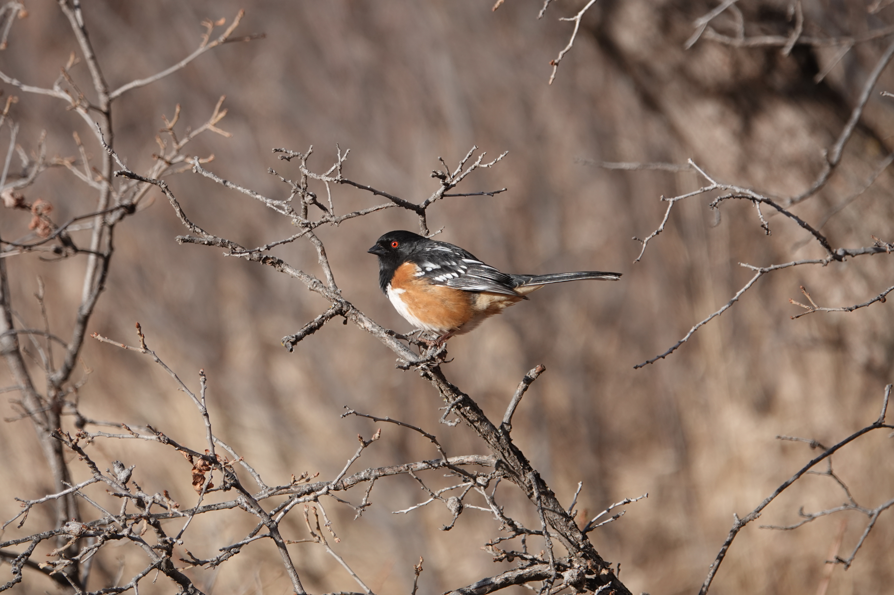
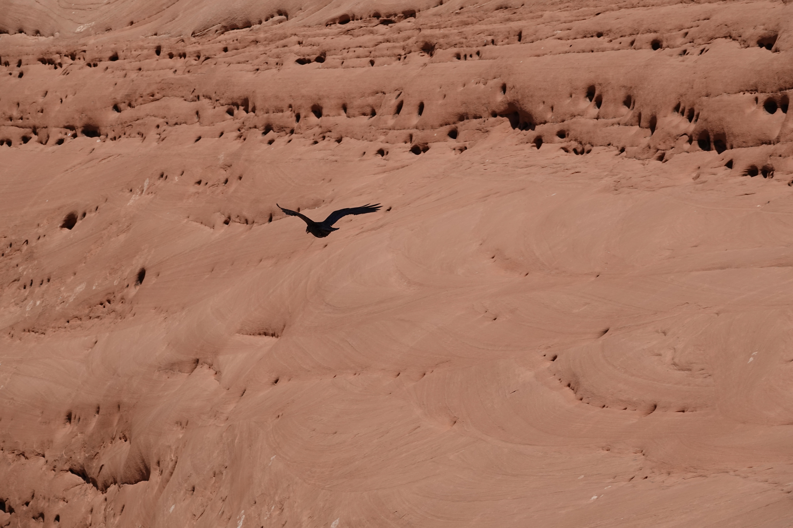
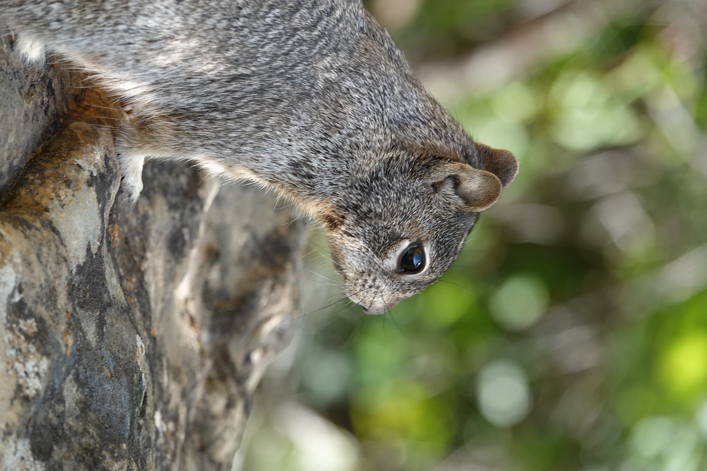
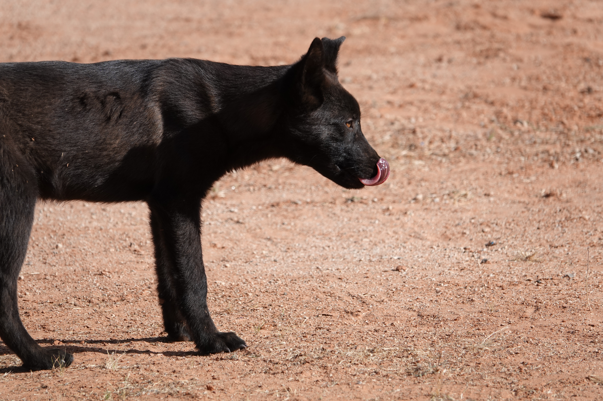
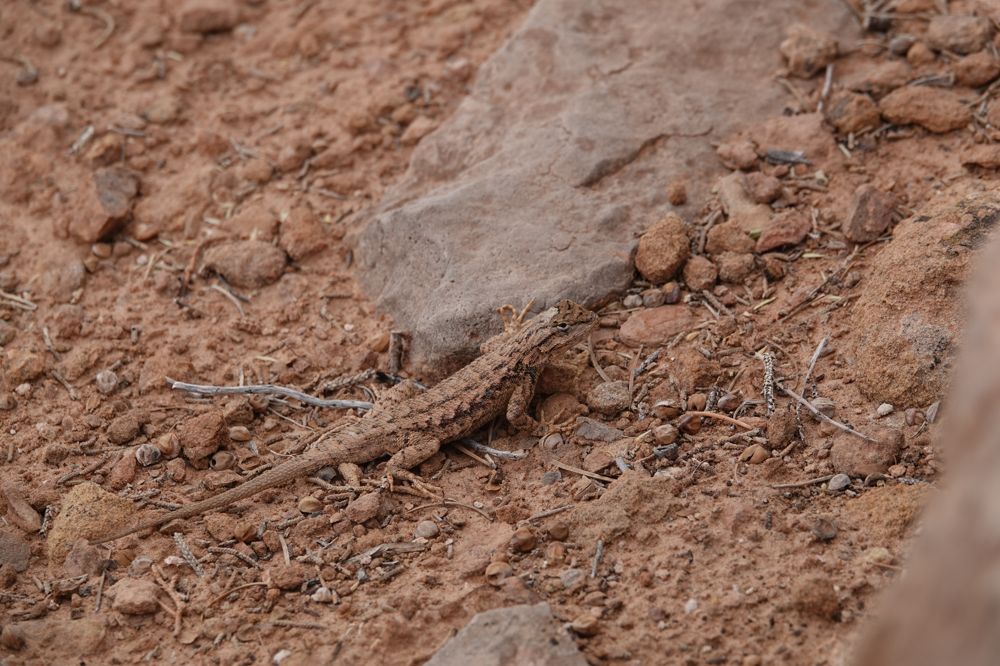
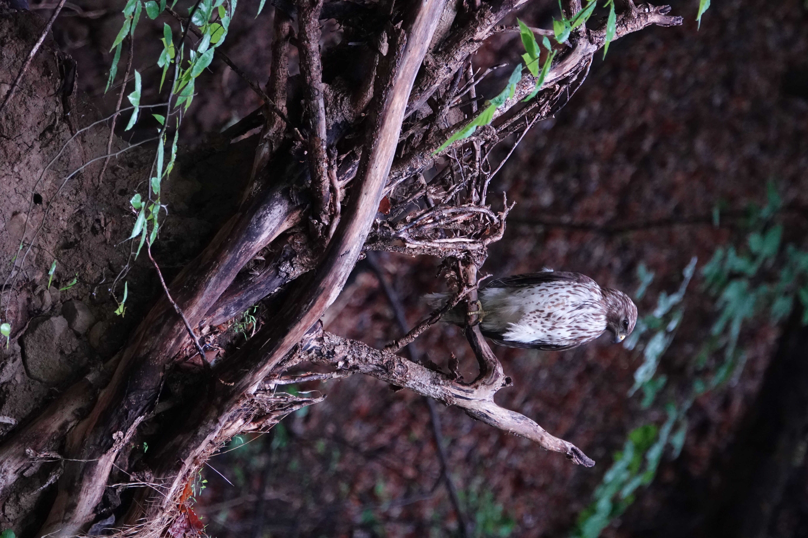
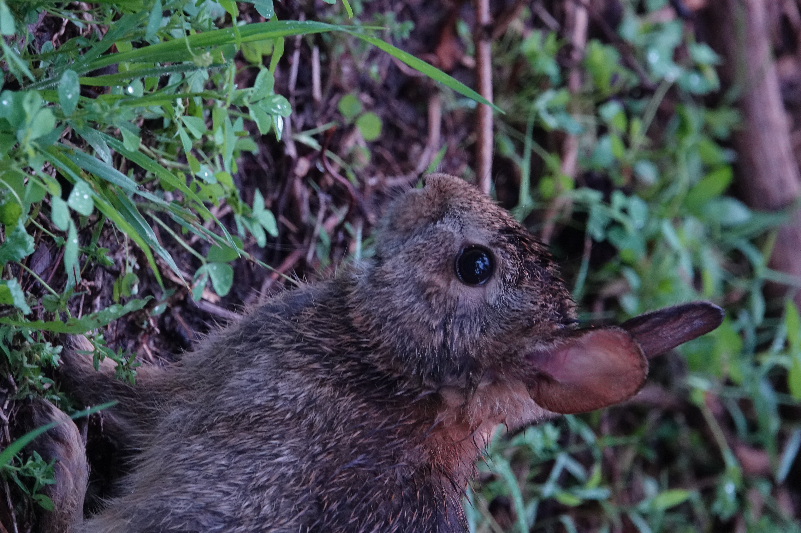
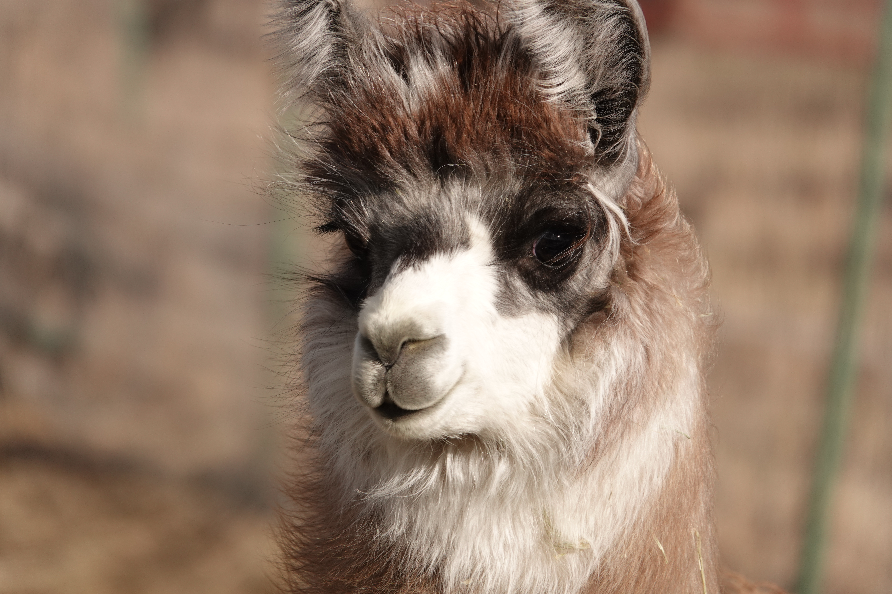

Pictures of Animals

A Spotted Towhee in Garden of The Gods

A crow flying in Arches National Park

A squirrel in Mesa Verde.

A doggy in Monument Valley.

A lizard in Southern Utah.

A hawk near UMD!

A bunny on campus!

A llama in Teller County.